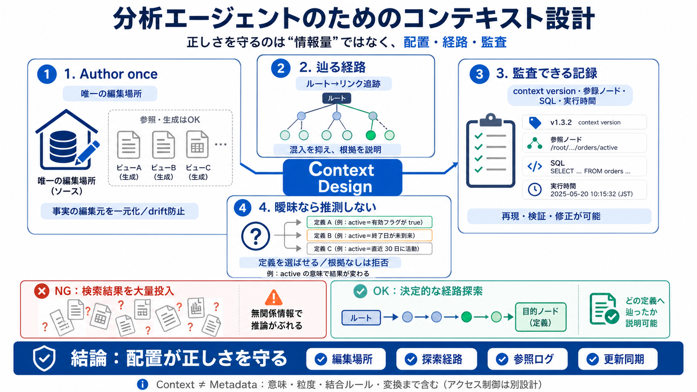

Context Layer vs Semantic Layer: What AI Agents Need [2026]
A semantic layer translates raw data into governed business metrics (tools like dbt MetricFlow, Cube, and AtScale define…

コンテキスト（Context）＝意味・粒度・結合ルール・監査まで含む設計
一つの事実（fact）に対して“authoritative home”（唯一の権威ある編集場所）を置く
定義・意味・粒度・変換ルールの参照先が曖昧 → 古いコピーや誤参照 → 推論が崩壊
最終的に残った中核方針は「不確かな回答を推測で作らない」
同じ事実が生成ビューや参照先から複数に見えてもよい
編集（author）を複数に分散しない（同期ズレ＝driftを防ぐ）
ルート（入口）を読む
関連ノードへリンク追跡
探索経路が指標の根拠フレーミングになる
無関係情報がウィンドウに入る確率を下げる
「なぜその指標か」が経路として示せる
回答に使われた定義セットを追跡できる
関連性の低い情報も一緒に見て、推論がぶれる
「どの経路で定義へ辿り着いたか」が説明しやすい
どのコンテキストを読んだか／どのノードを参照したか／生成したSQLは何か
検証・修正が可能になり、「なぜその結果になったか」を追跡できる
例：表示のための重複は許容。手作業コピーの“同期ズレ”が危険
「作者（author）と生成（generation）を分けて同期」させる
根拠（定義・粒度・結合等）に辿り着けない場合
定義のどれを使うか（どの“意味”を採用するか）を選ばせる
active＝何を満たすか
いつ・誰単位か
countryの保存形式・結合の前提
再現条件（データ規模/質問分布/モデル構成）が十分に見えにくく、効果の一般化は慎重さが必要
承認フロー・責任者・変更管理など組織設計も同時に必要（技術だけでは完結しない）
唯一の編集場所 / 辿る経路 / 監査できる記録 / 更新時の同期
アクセス制御は別途設計が必要。コンテキストは“意味の正しさ”に主に責任を持つ
A semantic layer translates raw data into governed business metrics (tools like dbt MetricFlow, Cube, and AtScale define…
and other of these like, you know, personal note-taking apps like have this concept of of, you know, linking to other co…
That’s the lens I brought to Google Cloud Next 2026. The main topic of the event was around building, deploying and mana…
The context layer is the organizational living brain. It is the layer that sits between your data estate and your AI age…
Ownership varies: sometimes product engineering owns it end-to-end with embedded data engineers; other times, central da…